Sudut
Singgah
Singgahlah sebentar, duduk dan pesanlah kopi
biarkan waktu berjalan lebih pelan.
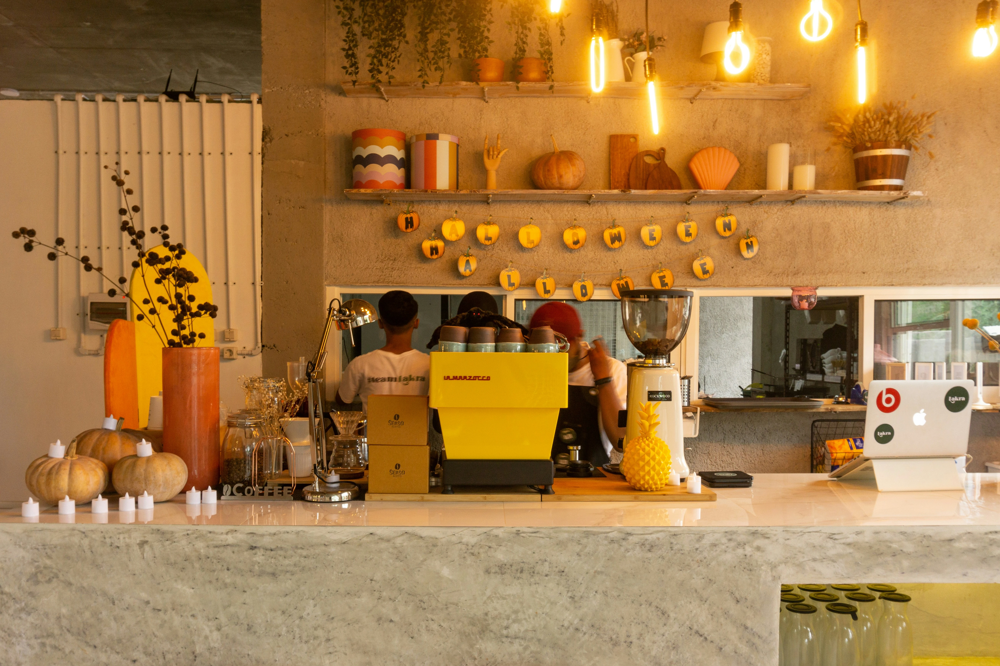
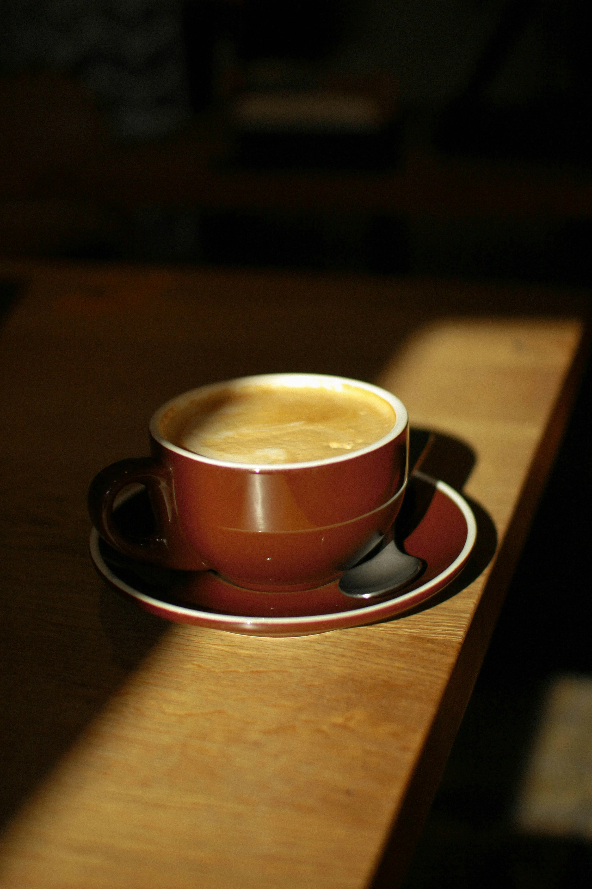
Cerita di Balik
Sudut Singgah
biarkan kopi yang bicara."
Sudut Singgah lahir dari keinginan sederhana — menyediakan tempat untuk berhenti sejenak. Di tengah rutinitas yang padat, kadang yang dibutuhkan hanyalah secangkir kopi dan sudut yang tenang. Kami bukan coffee shop mewah, kami adalah warkop, tempat di mana semua orang bisa merasa nyaman.
Terletak di Jl. Kawah Ijen, Bondowoso, Sudut Singgah hadir dengan suasana hangat dan harga yang bersahabat. Dari kopi tubruk hingga minuman kekinian, semua disajikan dengan rasa yang jujur. Singgahlah, nikmati jedamu.
Galeri
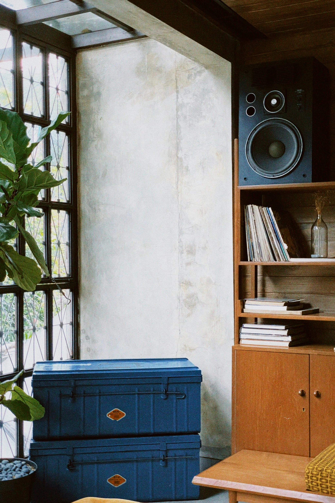
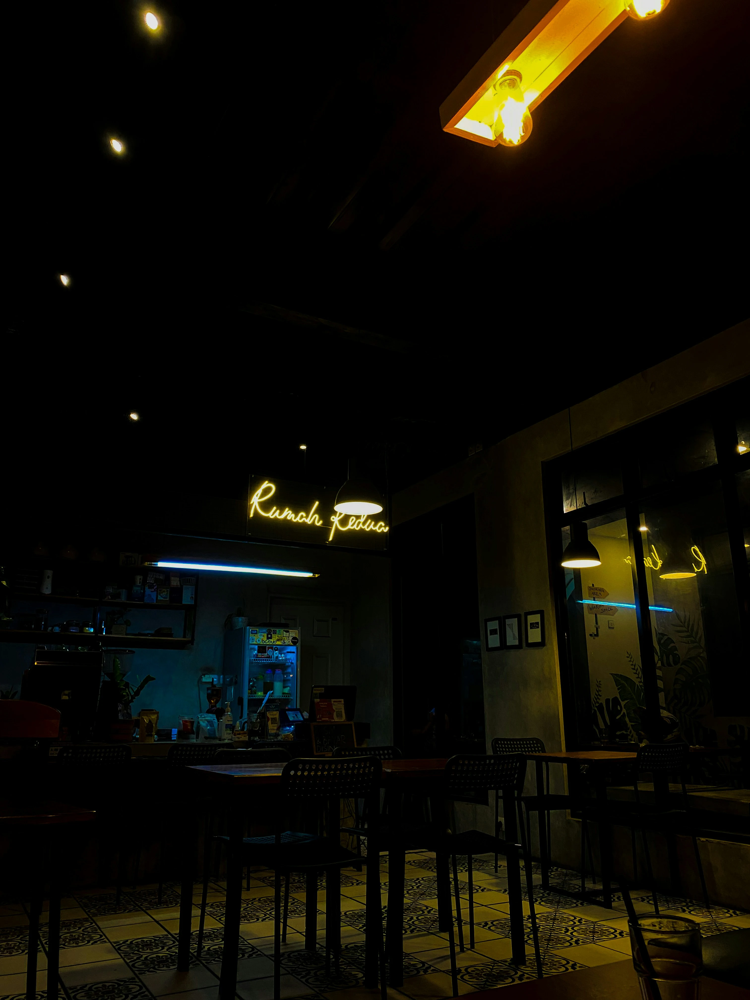
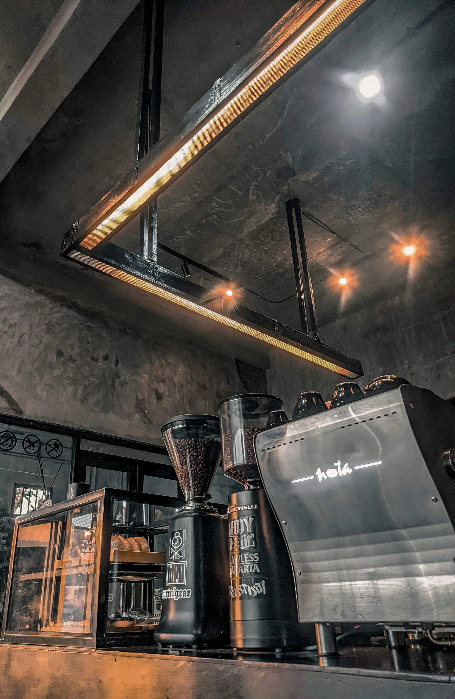
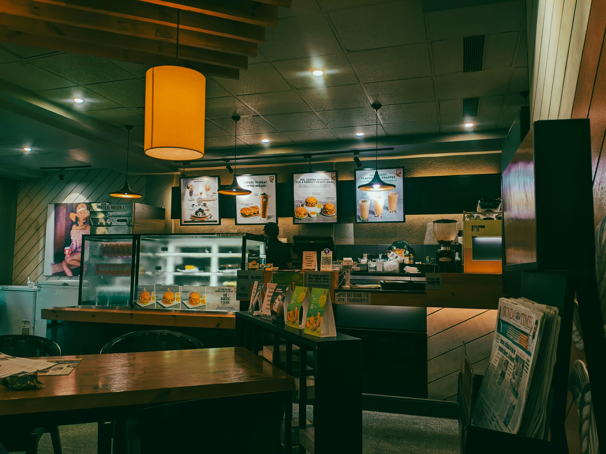
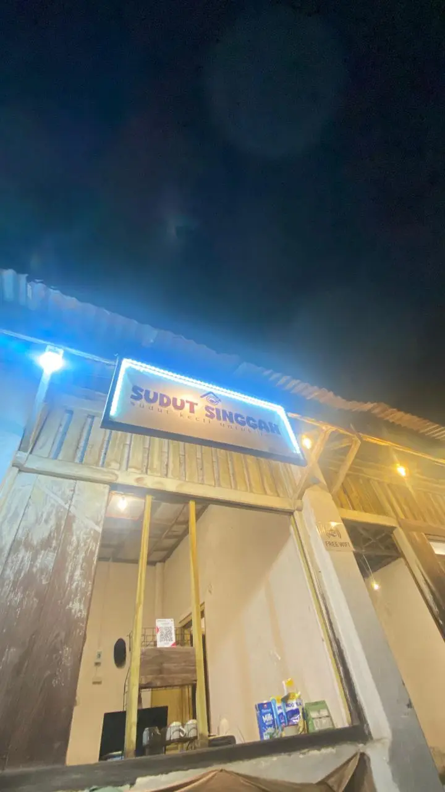
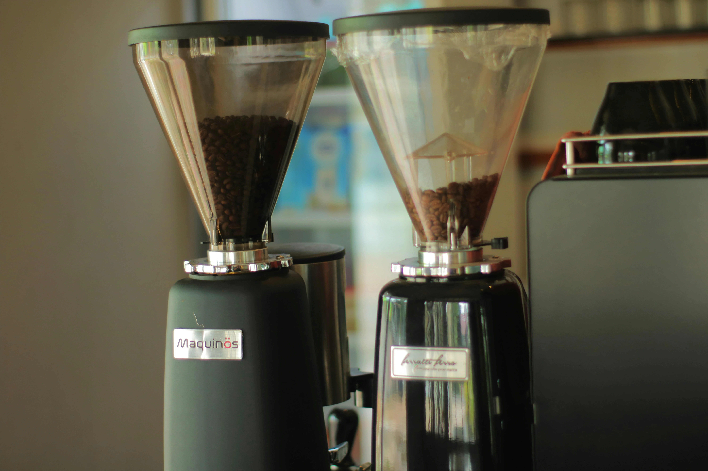
Sudut Singgah Explore
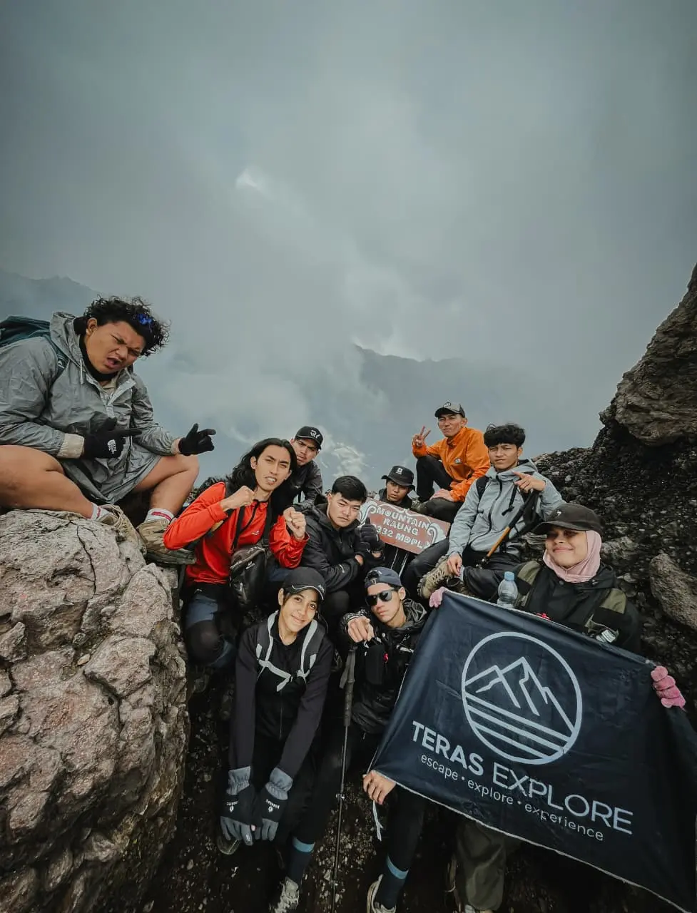
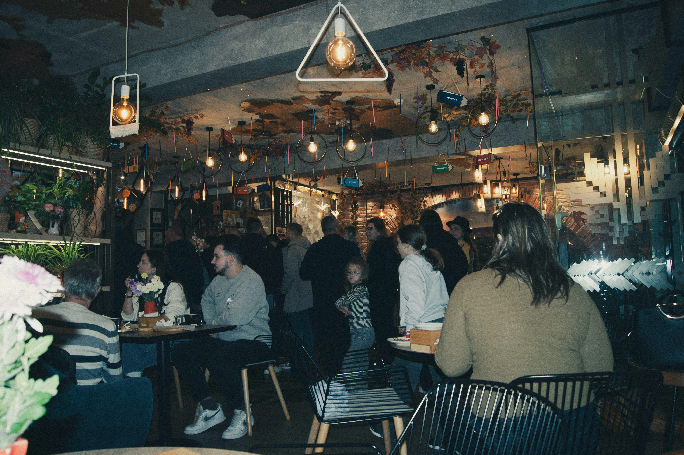
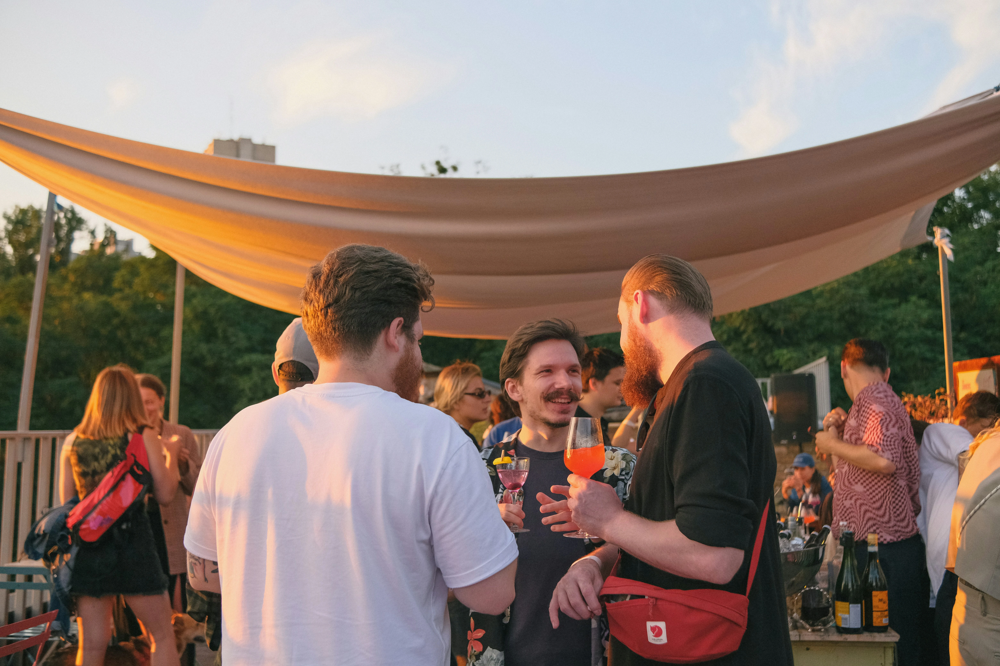
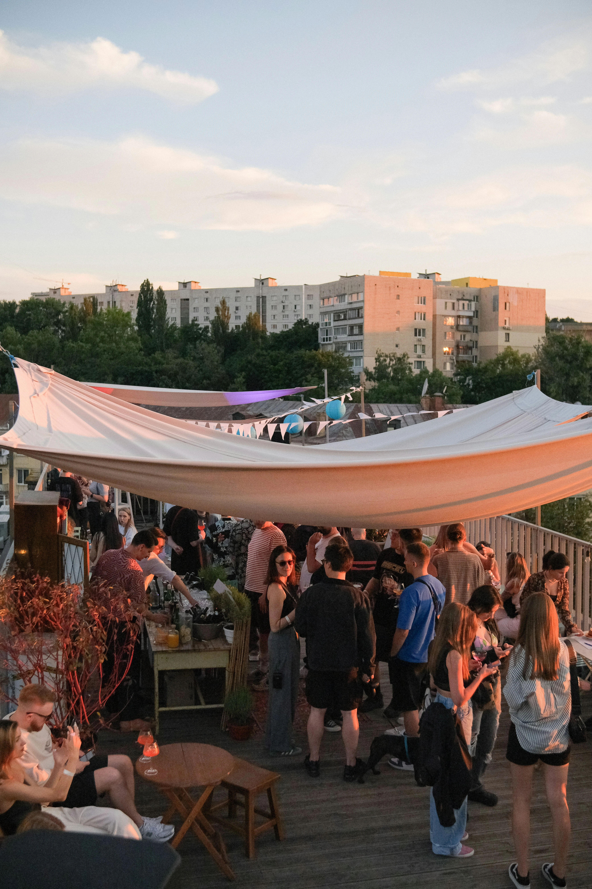